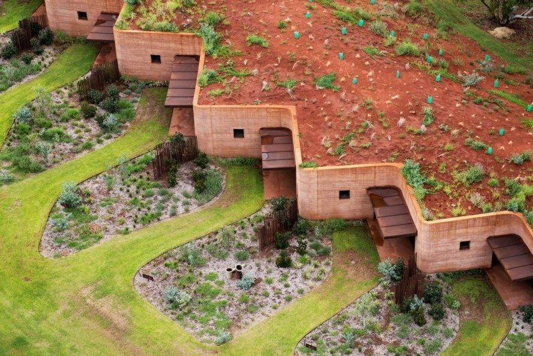
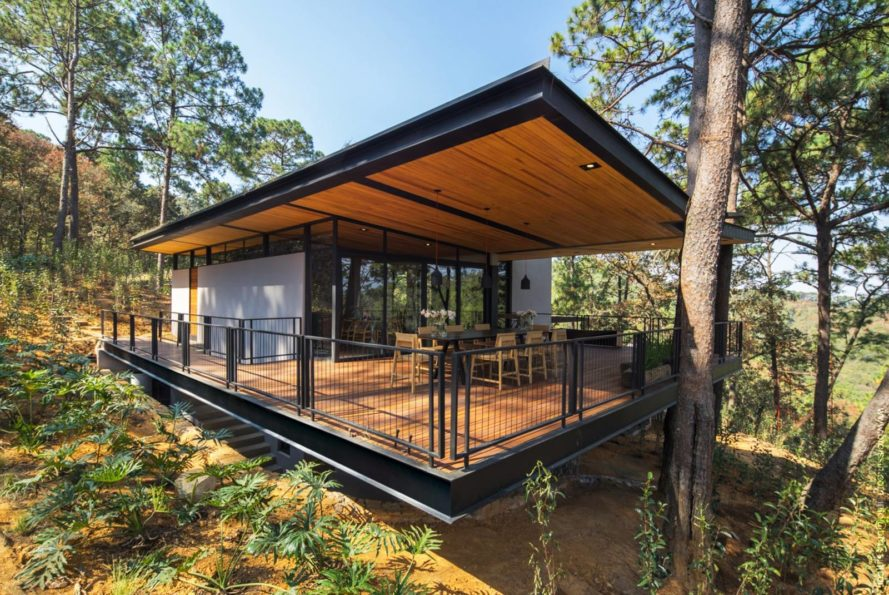
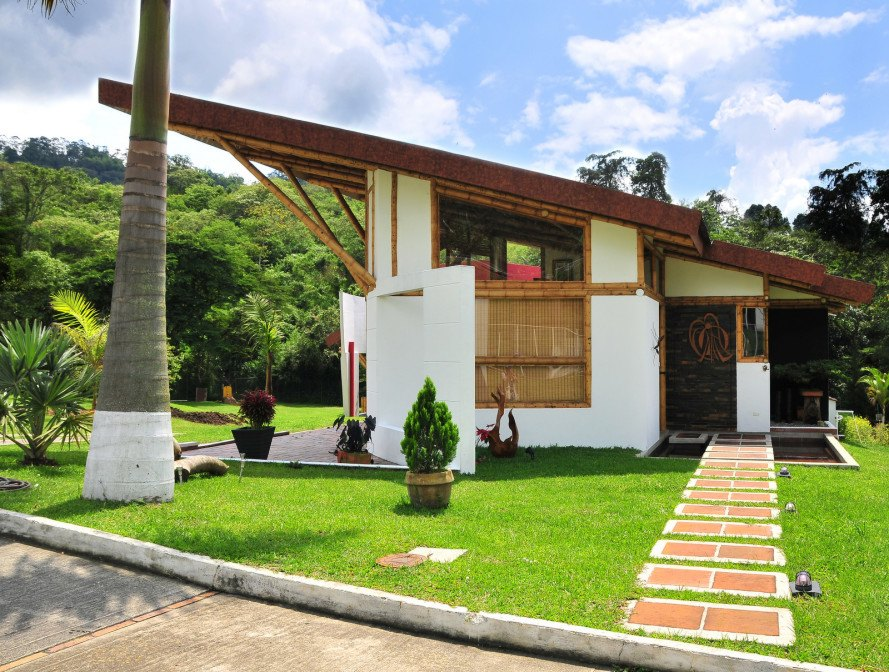
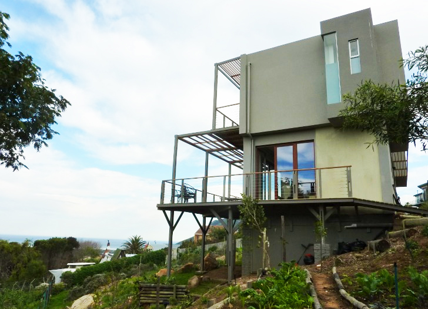

Rather than relying on new research and technology, straw bale building hearkens back to the days when homes were built from natural, locally-occurring materials. Straw bales are used to create a homes walls inside of a frame, replacing other building materials such as concrete, wood, gypsum, plaster, fiberglass, or stone. When properly sealed, straw bales naturally provide very high levels of insulation for a hot or cold climate, and are not only affordable but sustainable as straw is a rapidly renewable resource.
Whats more natural than the dirt under your feet? In fact, walls that have a similar feel to concrete can actually be created with nothing more than dirt tamped down very tightly in wooden forms. Rammed earth is a technology that has been used by human civilization for thousands of years, and can last a very long time. Modern rammed earth buildings can be made safer by use of rebar or bamboo, and mechanical tampers reduce the amount of labor required to create sturdy walls.
Plain old wood still retains many advantages over more industrial building materials like concrete or steel. Not only do trees absorb CO2 as they grow, they require much less energy-intensive methods to process into construction products. Properly managed forests are also renewable and can ensure a biodiverse habitat.
Bamboo might seem trendy, but it has actually been a locally-sourced building material in some regions of the world for millennia. What makes bamboo such a promising building material for modern buildings is its combination of tensile strength, light weight, and fast-growing renewable nature. Used for framing buildings and shelters, bamboo can replace expensive and heavy imported materials and provide an alternative to concrete and rebar construction, especially in difficult-to reach areas, post-disaster rebuilding, and low-income areas with access to natural locally-sourced bamboo.
HempCrete is just what it sounds like – a concrete like material created from the woody inner fibers of the hemp plant. The hemp fibers are bound with lime to create concrete-like shapes that are strong and light. HempCrete blocks are super-lightweight, which can also dramatically reduce the energy used to transport the blocks, and hemp itself is a fast-growing, renewable resource.